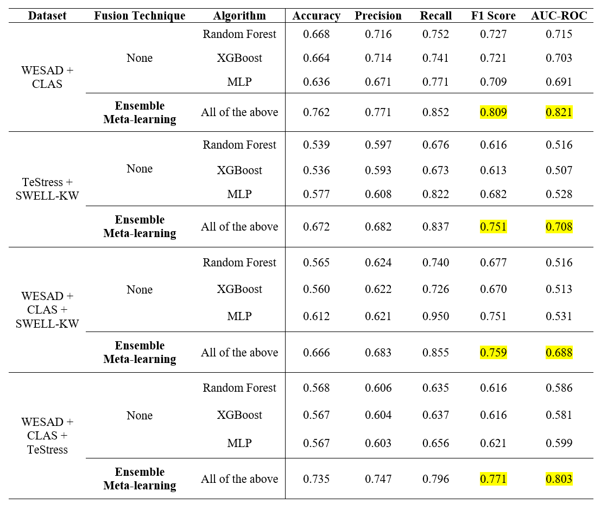
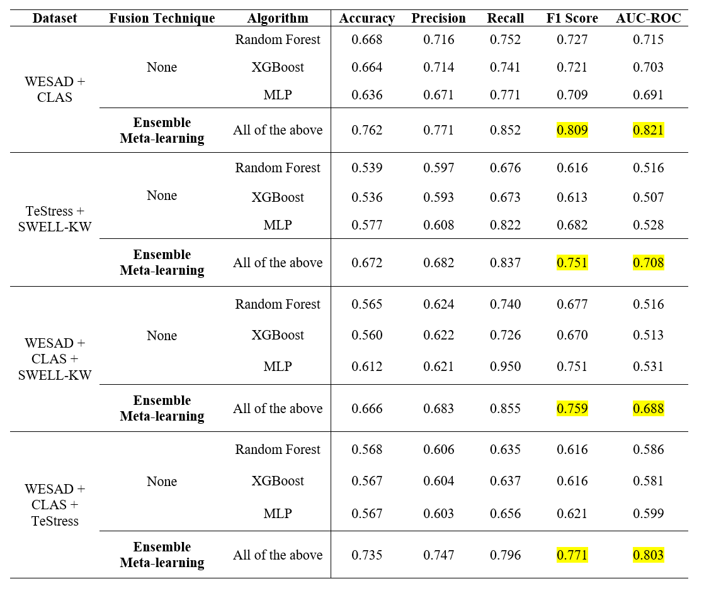

Acute Cognitive Stress Detection
Overview
This was my project for CP4101: BComp Dissertation (Final Year Project) at NUS; the topic was self-proposed and initiated, and was a cross-department project between the Department of Computer Science and the Department of Information Systems. I was under the supervision of Prof. Suranga Nanayakkara, and I was also fortunate to have worked with Profs. Steven Pan and Qin Lili from the NUS Department of Psychology.
This project focused on detection of acute cognitive stress that arises when students are working on mentally demanding tasks, especially when recalling information under pressure. After an extensive literature review on stress detection and multimodal machine learning, I recruited NUS undergraduate students as participants. We conducted a within-subjects data collection study with the students. The first session was held a week before their examinations, where they were asked to do menial, cognitively non-demanding tasks; the second session was during their actual course examination. We used Garmin Venu 3S smartwatches (equipped with Photoplethysmogram (PPG) and temperature sensors) to collect bio-signal data, after which we filtered the signals for noises and extracted lower-level HRV and temperature features. This custom dataset was combined with public datasets like WESAD and CLAS to train and develop a multimodal binary classification model; multiple model architectures and multimodal fusion methods were compared to select the best performing combination. The final model achieved 80.3% accuracy for in-situ stress detection. The report can be made available upon request!
This was a strenuous but exceptionally rewarding project, as I had to combine all that I'd learnt from both computer science and psychology - including research protocol design and data collection, as well as multimodal machine learning, fusion techniques, and signal processing. As for the model, we are currently preparing to test and deploy the model in a wearable system for students, to be used for a proactive nudging wearable device that promotes optimal studying habits.
Project Timeline
Project Gallery
 
